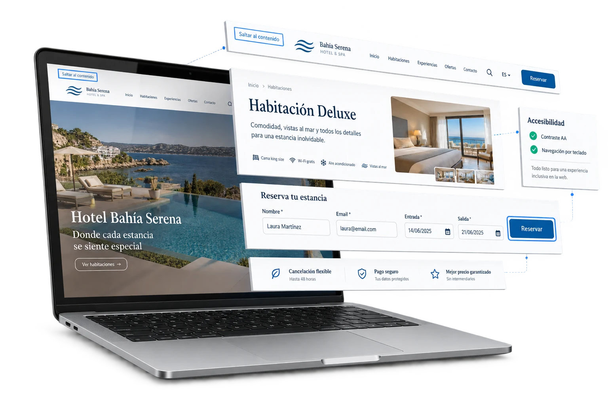

Accesibilidad
Testing de accesibilidad para productos digitales más inclusivos y usables.
Revisamos tu aplicación para detectar barreras de uso, problemas de navegación, contraste, formularios y compatibilidad con tecnologías de asistencia antes de que afecten a tus usuarios.

Qué revisamos
Validamos la accesibilidad como parte de la calidad real del producto.
Combinamos revisión funcional, análisis técnico y pruebas de uso para identificar problemas que dificultan el acceso al producto. El objetivo es que la accesibilidad forme parte de la calidad, no una revisión aislada al final.
- Navegación con teclado y orden de foco.
- Contraste, legibilidad y jerarquía visual.
- Formularios, mensajes de error y estados interactivos.
- Etiquetas, roles, textos alternativos y estructura semántica.
- Compatibilidad con lectores de pantalla y tecnologías de asistencia.
- Priorización de hallazgos según impacto real en usuario y negocio.
Preguntas frecuentes
¿Revisáis criterios WCAG?
Sí. Podemos revisar criterios WCAG aplicables al producto y priorizar los hallazgos según impacto real en uso, cumplimiento y negocio.
¿La accesibilidad solo afecta a usuarios con discapacidad?
No. Una interfaz accesible mejora claridad, navegación, formularios y uso en contextos diversos, beneficiando a muchos perfiles de usuario.
¿Podéis revisar diseños antes de desarrollar?
Sí. Podemos detectar problemas de contraste, jerarquía, navegación y componentes antes de que lleguen a implementación.
¿Entregáis recomendaciones para corregir los problemas?
Sí. Los hallazgos se acompañan de contexto, prioridad y orientación práctica para que el equipo pueda resolverlos con claridad.